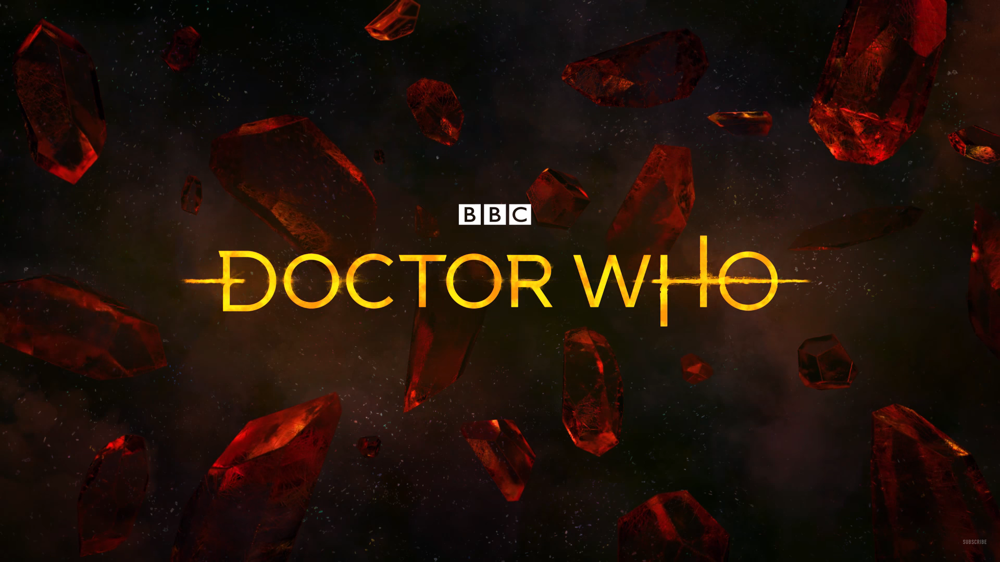

<!--
  Generated template for the IntroPage page.

  See http://ionicframework.com/docs/components/#navigation for more info on
  Ionic pages and navigation.
-->
<ion-content adjust>  
  <ion-slides pager >
    <!-- Slide exibindo imagem dw2018logo.png -->
    <ion-slide padding>      
      <button class='btn-top-right' ion-button small outline (click)="openTabs()" color='secondary'>Jump to tabs</button>
      
    </ion-slide>

    <!-- Slide exibindo imagem splashDWPurlpe.png -->
    <ion-slide>
      
      <h3>Second!</h3>
    </ion-slide>

    <!-- Slide exibindo imagem splashDWRedStones.png-->
    <ion-slide>
      
      <h3>Thirdy!</h3>
    </ion-slide>

    <!-- Slide com slides -->
    <ion-slide>
       <!-- Slides internos -->
      <ion-slides direction="vertical" slidesPerView='1' >
        <!-- Slide nome + info -->
        <ion-slide >
          <h1>
            <ion-icon name="cafe">
              Talisson Galho
            </ion-icon>                        
          </h1>
          <p>
            Designer de software
          </p>
        </ion-slide>
        <!-- Slide nome + info -->
        <ion-slide >
            <h1>
              <ion-icon name="logo-github">
                trGalho
              </ion-icon>              
            </h1>
          </ion-slide>
      </ion-slides>
       
    </ion-slide>    
  </ion-slides> 
</ion-content>